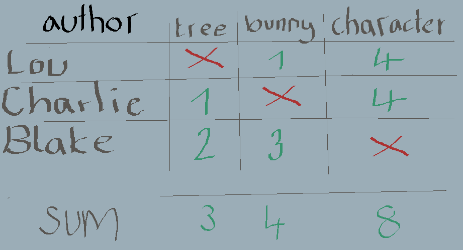
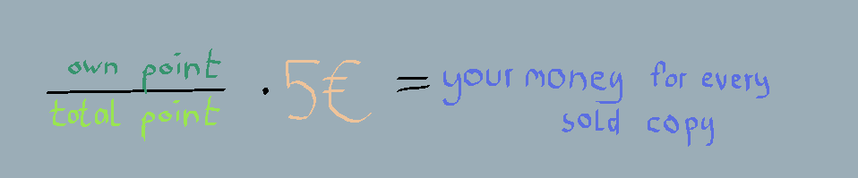

Whats in for you?
Everybody who wants to help creating chaoslands and which work is good will get money. This page shows, how the 25% of every sold game will be split between the volunteers. Short Explanation: Every piece or group of pieces that you submit will be on this website, if you agree. Other people can vote which pieces they like most. The rating of your pieces will determen how much money you will receive.
Example:
Lets imagine Lou, Charlie and Blake created one sprite each and submitted it. Lou has drawn a tree, Charlie has drawn a bunny and Blake has drawn a character. Thouse Images are part of the game, planned to be in a later version or outdated.

1.Vote
Everybody, who either is designer or bought chaoslands is able to distribute 5 points to the pieces of other people. In this example there are 3 Person so there is a total number of 15 Points. Lou passes one point to Charlies bunny and four points to Blakes character design. You can not vote for your own pieces.
2.Formular
Your points can be calculated through the sum of points of every piece you created. Thouse points will be put into this formular.
3.Your Part
Lou has 3 points and that makes a income of 1€ per sold game. Charile has 4 points and that makes a income of 1.33€ per sold game. Blake has 8 points and that makes a income of 2.33€ per sold game.

So what can you submit?
· sprites or sounds that are outdated or not pretty anymore
· e.g. the "next turn" button
· e.g. the button and frame design
· e.g. background music